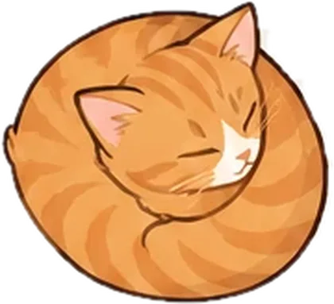

Cat Pile

Pile napping cats on the blanket and clear the lines
Hint
Undo
Restart
Share
Toys
Best times
How to play
Level
New blanket
Cats
Off shows plain coloured blocks instead
Turning
Turn a clump with ↻ (or R); no gold paw if you do